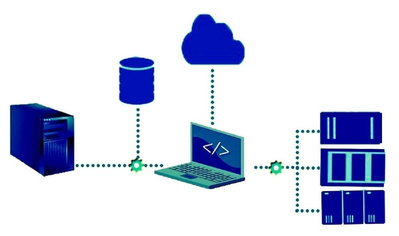
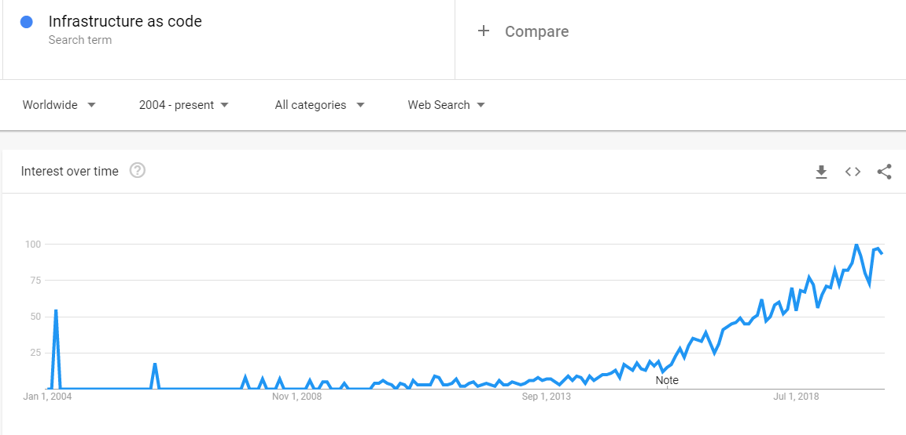
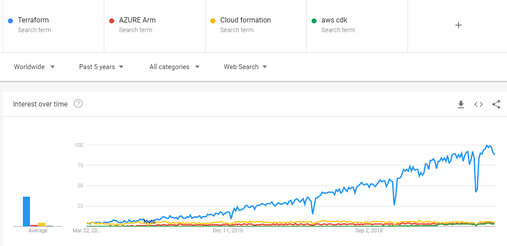
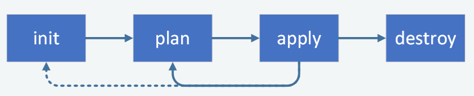
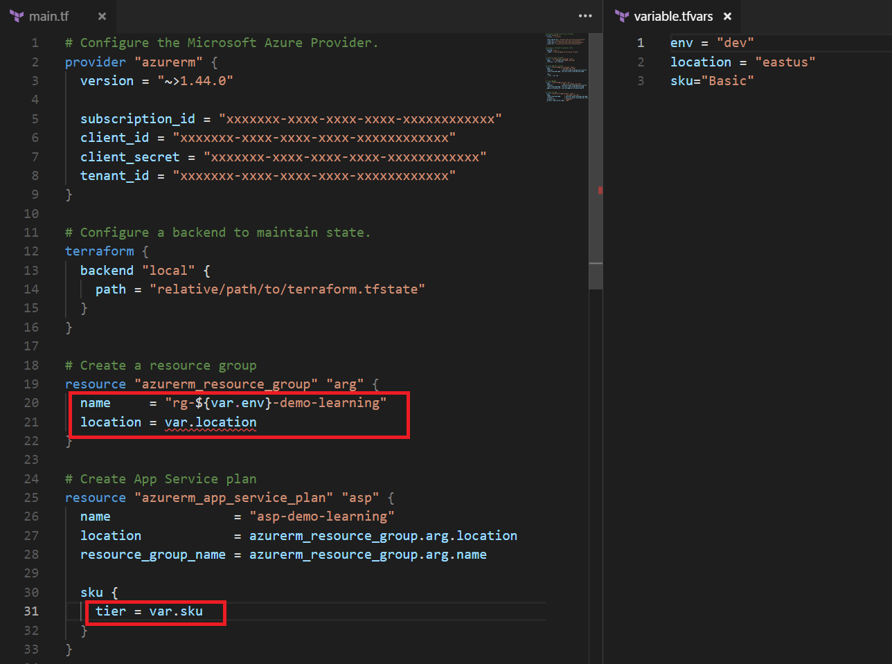
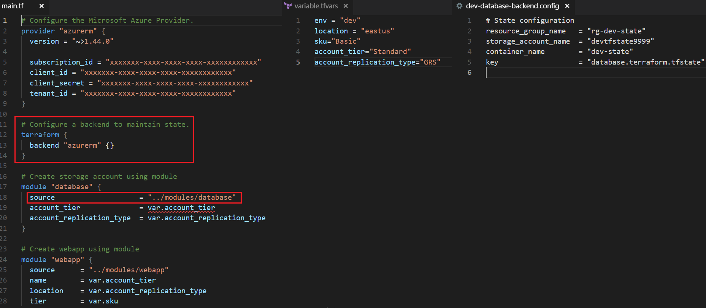

Infrastructure as Code
using

Agenda
- IaC overview
- Terraform concepts
- Provisioning demo on Azure and AWS
- Case studies
- Best practices
What is IaC?
Infrastructure as Code (IaC) is a method to provision and manage IT infrastructure using source code, rather than through standard operating procedures and manual processes.

Gives the ability to automate provisioning process to give quick and consistent results.
Why IaC?
- Lower costs
- Increase productivity
- Process in simple, repeatable and consistent
- Code is now the single source of truth
- Little to NO documentation
- Taking the CICD journey to next level
Why IaC?
How?
- ARM Templates
- AWS CloudFormation
- Google Cloud Deployment Manager
- Alibaba Cloud Resource Orchestration Service(ROS)
- Ansible playbooks
- Chef, Puppet, Saltstack etc.
- Terraform
What is Terraform?
- Terraform is the first multi-cloud infrastructure tool that was introduced to the world by HashiCorp.
- Opensource, released five years ago and written in Go.
- Hashicorp Coorporation Language(HCL)
- Declarative programming
Why Terraform?
- Platform Agnostic
- Readability: Json like, but human friendly
- Modularity
- Validation
- Enables implementation of all kinds of coding principles like having your code in source control, create reusable modules and the ability to write automated tests.
- Massive open source community
Why Terraform?
Terraform workflow
-

# Configure the Microsoft Azure Provider.
provider "azurerm" {
version = "~>1.44.0"
client_id = "xxxxxxx-xxxx-xxxx-xxxx-xxxxxxxxxxxx"
client_secret = "xxxxxxx-xxxx-xxxx-xxxx-xxxxxxxxxxxx"
}
# Configure a backend to maintain state.
terraform {
backend "local" {
path = "relative/path/to/terraform.tfstate"
}
}
# Create a resource group.
resource "azurerm_resource_group" "arg" {
name = "rg-demo-learning"
location = "eastus"
}
# Create App Service plan
resource "azurerm_app_service_plan" "asp" {
name = "asp-demo-learning"
location = azurerm_resource_group.arg.location
resource_group_name = azurerm_resource_group.arg.name
sku {
tier = "Free"
size = "F1"
}
}
# Create WebApp
resource "azurerm_app_service" "as" {
name = "app-service-demo-learning"
location = azurerm_resource_group.arg.location
resource_group_name = azurerm_resource_group.arg.name
app_service_plan_id = azurerm_app_service_plan.asp.id
}
# Create storage
resource "azurerm_storage_account" "asa" {
name = "asa-demo-learning"
resource_group_name = azurerm_resource_group.arg.name
location = azurerm_resource_group.arg.location
account_tier = "Standard"
account_replication_type = "GRS"
}
- Terralith: Never take a POC setup and evolve it into production without splitting things up.
To make things better
- Introducing variable files
- Environment specific folders
Files for Multi-Terralith
To make things better(Cont.)
- Introducing variable files
- Environment specific folders
- Introducing modules
Taking game to next level
- Introducing variable files
- Environment specific folders
- Introducinig modules
- Per component state file
- Remote state
Files for TerraServices
The Terrors
What next?
- Linting
- Unit Testing using Terratest
- Availability testing
- Approval workflow
- Envision IaC in one-click CICD pipeline
Ankit Arora